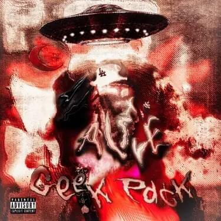
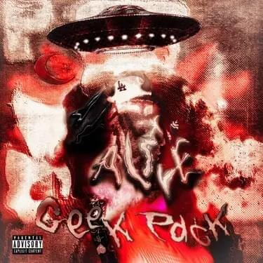

Drake

Aubrey Drake Graham, born October 24 1986, is a Canadian rapper,
singer and actor. An influential figure in contemporary popular
music, Drake has been credited for popularizing singing and R&B
sensibilities in hip hop. Gaining recognition by starring as Jimmy
Brooks in the CTV teen drama series Degrassi: The Next Generation
(2001–2008), Drake pursued a career in music releasing his debut
mixtape Room for Improvement in 2006. He followed this with the
mixtapes Comeback Season (2007) and So Far Gone (2009) before
signing with Young Money Entertainment.
Read more...


 
